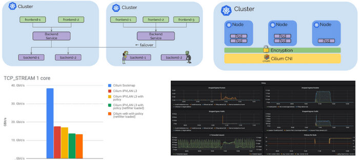
本文为翻译文章，点击查看原文。
我们很高兴地宣布Cilium 1.4版本。 该版本引入了几项新功能以及优化和可扩展性工作。 重点包括增加全局服务，提供跨多个集群的Kubernetes服务路由、DNS请求/响应感知授权和可见性、透明加密（beta）、IPVLAN支持以获得更好的性能和延迟（beta）、与Flannel集成、GKE在COS上支持、基于AWS元数据的策略实施（alpha）以及优化内存和CPU使用的重要工作。
像往常一样，感谢过去4个月中在版本1.3和1.4之间贡献了1048次提交的Cilium开发人员及整个社区。
Cilium是什么？
Cilium是一个开源软件，用于透明地提供和保护使用Kubernetes、Docker和Mesos等Linux容器管理平台部署的应用程序服务之间的网络和API连接。
Cilium的基础是一种名为BPF的新Linux内核技术，它可以在Linux本身内动态插入强大的安全性、可见性和网络控制逻辑。BPF用于提供诸如多集群路由，负载均衡以取代kube-proxy，使用X.509证书的透明加密以及网络和服务安全性等功能。除了提供传统的网络级安全性之外，BPF的灵活性还可以通过应用程序协议和DNS请求/响应的上下文实现安全性。Cilium与Envoy紧密集成，并提供基于Go的扩展框架。由于BPF在Linux内核中运行，因此可以应用所有Cilium功能，而无需对应用程序代码或容器配置进行任何更改。
有关 Cilium 的更详细的介绍， 请参阅**Cilium简介** 一节。
多集群服务路由
Cilium 1.3在多个集群之间引入了基本的pod IP路由功能。Cilium 1.4引入了基于标准Kubernetes服务的全局服务概念。全局服务允许用户指定Kubernetes服务在多个集群中可用。然后，该服务可以在多个集群中具有后端pod。
用户体验就像在每个集群中定义具有相同名称和命名空间的Kubernetes服务并添加注释以将其标记为全局一样简单。 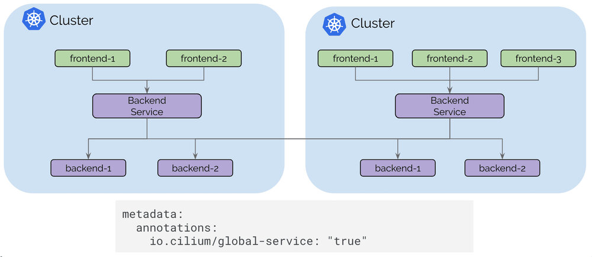
当pod向上或向下扩展或变得不健康时，Kubernetes运行状态检查信息可用于自动添加和删除后端服务。
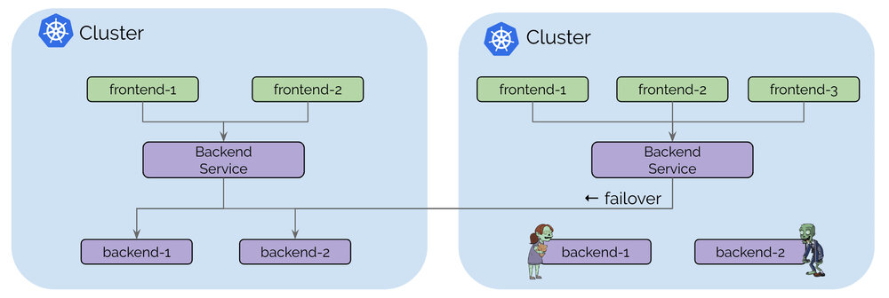
控制平面建立在etcd之上，类似于Kubernetes原生的操作方式，具有弹性和简单性作为其基本设计模式。每个集群继续运行其自己的etcd集群，并且复制以只读方式进行，这可确保集群中的故障不会影响其他集群。
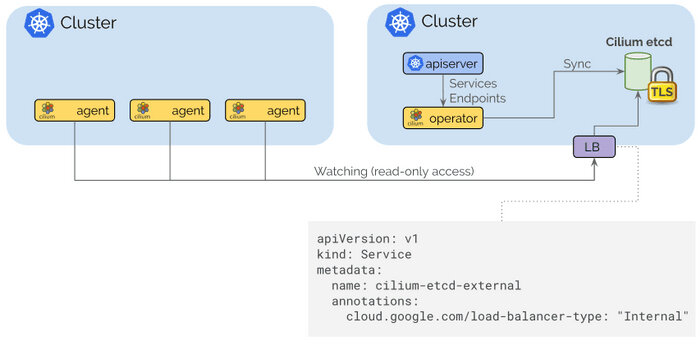
将集群连接在一起就像使用云供应商的标准路由API或基于常规IP地址的VPN网关和隧道的本地基础设施在VPC之间提供路由，然后通过内部Kubernetes负载均衡器暴露Cilium控制平面以将其暴露给内部VPC一样简单。TLS用于使用作为Kubernetes Secret管理的证书和密钥对客户端和服务器进行身份验证。
IPVLAN支持（测试版）
添加了一种新的基于IPVLAN的数据路径模式。与基于veth的体系结构相比，IPVLAN具有低延迟优势。使用netperf在3.40Ghz Xeon上的两个本地容器之间测量了以下基准测试，并使用单核禁用超线程。与veth相比，IPVLAN的P99延迟相对较低（越低越好）：
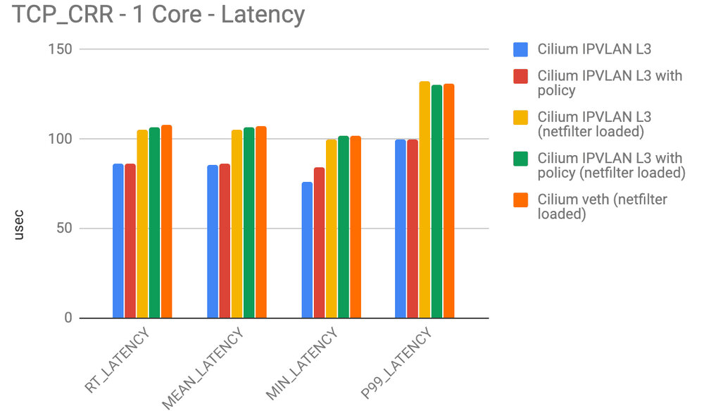
IPVLAN和veth之间的最大吞吐量（越高越好）非常相似，但是通过从内核编译netfilter/iptables可以实现非常显着的性能提升。如果您不使用NodePort服务并且在离开Kubernete worker node时不需要伪装网络流量，则已经可以完全运行您的Kubernetes集群。我们将在接下来的几周内提供有关如何运行iptables和kube-proxy的指南。
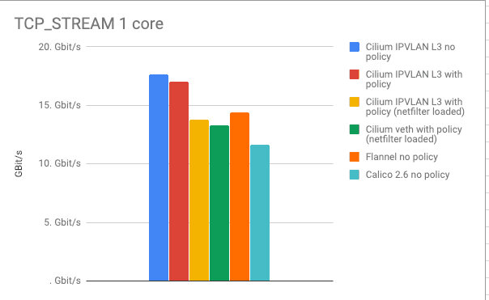
IPVLAN是1.4中的beta级功能，有关如何启用和配置该功能的说明，请参阅 IPVLAN入门指南 。
DNS请求/响应的安全性和可见性
Cilium 1.4扩展了现有的DNS安全策略模型，以了解各个pod发出的DNS请求以及它们收到的DNS响应。 这显着提高了访问集群外部服务的pod的安全性：
-
在执行DNS查找时，可以将Pod限制为具有最小权限，即 pod可以仅限于查找匹配模式的DNS名称，例如
*.domain.com。 任何超出允许模式的请求都将收到request refusedDNS响应。 -
DNS查找后的通信可以限制为特定pod接收的DNS响应中返回的IP地址。 这显着降低了受损应用程序的权限，并提高了基于DNS的策略规则的可靠性，因为执行逻辑不再需要知道DNS名称可以映射到的所有可能的IP地址。
特别是对于云供应商提供的流行存储，消息传递和数据库服务，单个DNS名称可以映射到数百或数千个IP地址。
-
现在可以通过API访问的Cilium授权日志记录层记录DNS查找和响应。 这提供了pod执行的每个DNS请求和响应的精确日志。
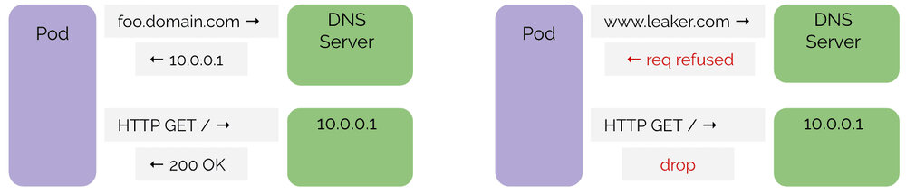
上面的示例显示了一个成功的DNS序列，然后是DNS服务器响应的对IP的HTTP请求。 这是应用程序的行为方式和允许的方式。 后续HTTP请求可以使用缓存的DNS信息，允许此类请求。 DNS信息将根据记录中的TTL信息超时。
右侧是应用程序在允许的DNS策略之外执行DNS查找的序列。 它还显示，如果应用程序无法执行DNS查找，则在应用程序无法在以下位置查找DNS名称时，即使IP地址实际映射到允许的DNS名称，也会阻止任何尝试联系IP地址的尝试。一点。
策略示例
apiVersion: "cilium.io/v2"
kind: CiliumNetworkPolicy
metadata:
name: "egress-domain-wildcard"
spec:
endpointSelector:
matchLabels:
app: myService
egress:
- toEndpoints:
- matchLabels:
'k8s:io.kubernetes.pod.namespace': kube-system
k8s-app: kube-dns
toPorts:
- ports:
- port: '53'
protocol: UDP
rules:
dns:
- matchPattern: "*.domain.com"
- toFQDNs:
- matchPattern: "*.domain.com"
toPorts:
- ports:
- port: '443'
protocol: TCP
上述策略示例授予pod或容器通过kube-dns执行DNS请求的权限，但将允许的DNS查找限制为 *.domain.com 。 与模式不匹配的请求将收到 request refused DNS响应。 它进一步授予端口443/TCP上的pod出口访问权限到DNS响应中返回的IP。 任何尝试访问先前未在DNS响应中返回的任何IP地址的请求都将被拒绝。
要开始使用基于DNS的策略，请遵循 基于DNS的入门指南 。
透明加密和身份验证（测试版）
为集群内和集群之间的所有服务到服务通信提供透明加密是一种经常被要求的功能。 加密允许在不受信任的网络中运行Kubernetes，透明地加密集群中服务之间的所有通信。 身份验证可确保只有受信任的工作节点才能参与集群。
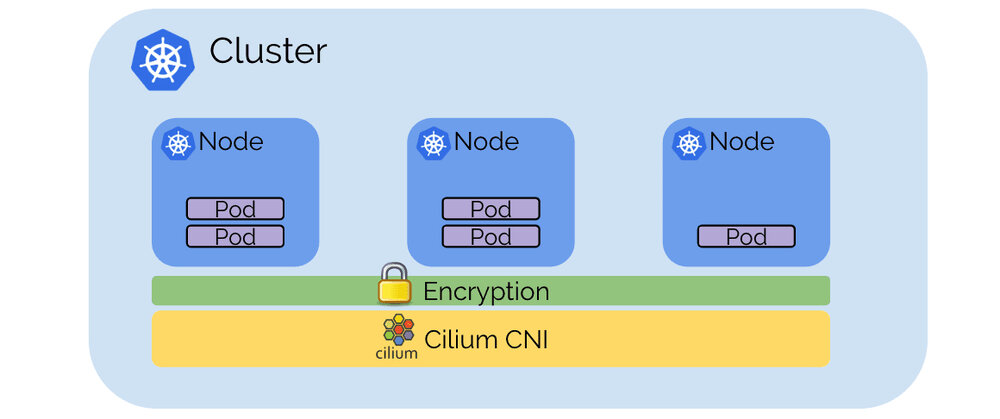
加密基于X.509证书和密钥。 目前，使用PSK，使用Kubernetes Secret分发给所有节点。 但是，基础结构与SPIFFE兼容，并允许在将来的版本中在每个服务级别上使用SPIFFE证书提供服务身份验证。 数据路径实现使用Linux内核的IPSec实现，它避免了作为所有服务的一部分运行sidecar代理的需要，并确保通过现代处理器中的专用CPU指令集有效和自动地使用硬件辅助加密加速。
透明加密是一种beta级功能。 要启用该功能，请将 --enable-ipsec 选项传递给代理，并通过 --ipsec-key-file 选项或使用Kubernetes Secret提供预共享密钥（PSK） 。
基于Sockmap BPF的sidecar加速（alpha）
正如在KubeCon上宣布的那样 ，我们正在使用Cilium 1.4进行本地进程通信加速。
Sockmap加速本地进程通信主要用于sidecar代理和本地进程之间的通信，但适用于所有本地进程。 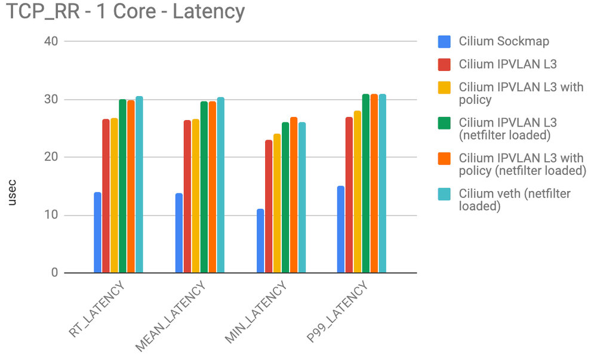
启用sockmap时，请求数/s和最大吞吐量都加倍： 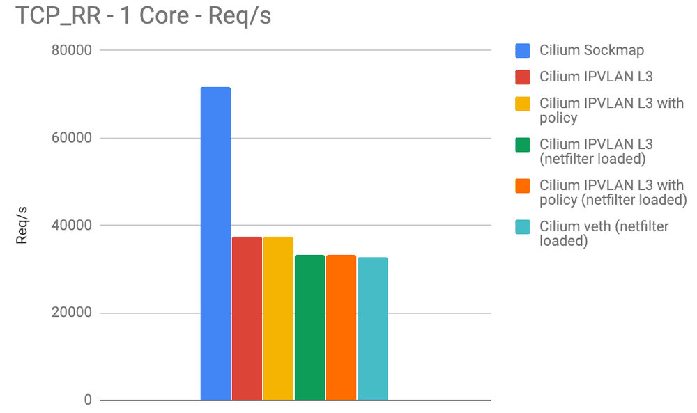
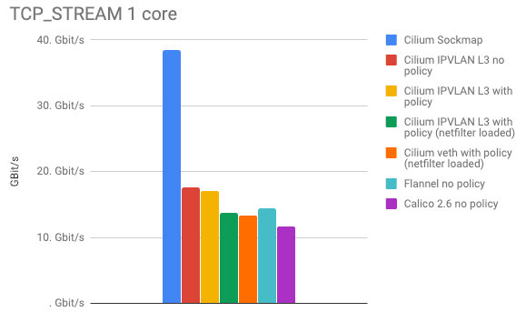
请注意，所有这些性能数字均为每个CPU核心。
Sockmap加速是1.4中的alpha级别功能。 可以使用该 --sockops-enable 选项启用它 。
新Grafana仪表板
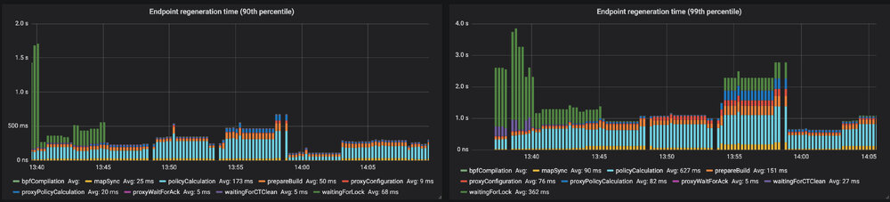
添加了几个新的Prometheus指标，并且可以使用单个命令将新的Grafana仪表板部署到任何Kubernetes集群中：
kubectl apply -f https://raw.githubusercontent.com/cilium/cilium/v1.4/examples/kubernetes/addons/prometheus/monitoring-example.yaml
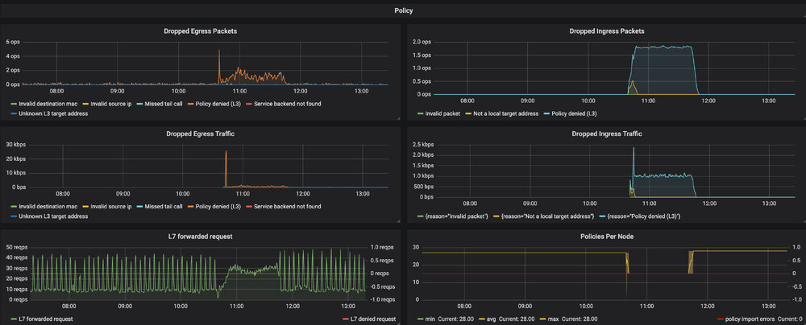
Flannel整合（测试版）
与使用Flannel CNI插件配置的现有集群的Cilium的安全策略实施和负载平衡功能的用户经常要求与Flannel集成。
Cilium 1.4引入了一个新的配置选项：
flannel-master-device: "cni0"
这使得Cilium可以使用CNI链接在flannel上运行。 通过启用以下选项，还可以自动获取工作节点上的现有容器/容器：
flannel-manage-existing-containers: "true"
该选项还需要编辑Cilium DaemonSet以启用该 hostPID: true 选项，以便Cilium可以查看附加到现有容器的所有进程。
Flannel集成主要用于在现有集群中尝试Cilium功能或用于迁移目的。 有些大规模有用的功能将无法运行，这包括将源的安全身份嵌入网络数据包的能力，这需要回退到基于IP的识别。
有关详细信息，请参阅 flannel入门指南
与其他CNI的基准测试
在过去的两个月里，我们已经接触过很多Cilium与其他CNI插件的比较。 因此，我们针对其他流行的CNI插件运行了几个基准测试。
在我们进入实际数字之前的两个单词：
- 基准测试很难。 我们并未声称我们可以在理想配置中配置其他CNI插件。 如果您有意见，请联系我们，我们很乐意进行调整。 这些基准测试的目标是表明，通过改变架构和在堆栈中使用不同的技术，而不是仅仅将一个CNI与另一个CNI进行比较，可以产生最大的影响。 即使是Cilium，其性能也会因配置而异。
- 我们专注于测量网络开销，因此我们在两个本地容器之间运行基准测试，以尽可能多地消除硬件限制。
- 目标不是达到最大或最低的数量。 我们使用单个CPU核心进行测量，限制CPU的数量。 系统的CPU越多那么上限可能会更高。 而我们关注在单核下数字之间的差异，而不是测试结果数的最大值。
- 通常采取几个重点来做基准。 基准测试总是在特定的环境中完成。 理解上下文很重要。 如果您不清楚我们在这里发布的数字，请联系我们，我们会澄清它。
说了那么多，接下来让我们深入研究数字：
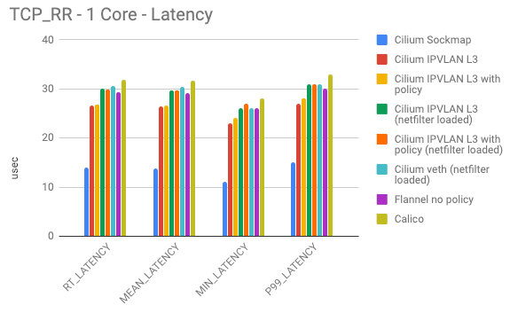
以上数字显示了两个容器在单个连接上交换尽可能多的1字节请求和响应消息时的各种延迟测量。 此测试主要显示特定转发路径是否非常有利于吞吐量而非延迟。
- Cilium Sockmap正在大力利用其能够在套接字级别上运行的优势。 这仅适用于节点内的连接。
- 下一个最佳类别是在IPVLAN模式下运行的Cilium，netfilter/iptables已完全删除。 Cilium是否在加载安全策略规则时运行是有区别的，但这种差异很小。 这是因为用于策略实施的高效的每CPU哈希表可以最大限度地减少开销。 请注意，此数字已包含负载平衡BPF映射查找，因此此模式允许替换其他测试未考虑的kube-proxy。
- 接下来是Flannel和Cilium以veth模式运行。 Flannel是一个使用Linux路由表的最小网络插件。 极简主义得到了回报，但这也意味着flannel不能执行任何策略执行，并且必须依赖于iptables或IPVS模式的kube-proxy。 由于执行了一些工作以在连接过程中启用策略实施，即使之前未加载任何策略规则，Cilium也会略微恶化。
- Calico在我们的测试中显示出略微增加的开销。 可能由于添加了更多的iptables规则并且正在使用更多的netfilter链。 我们没有为此特定测试加载任何策略规则到Calico但是假设使用ipset将允许缩放OK。 不如每个CPU哈希表好。
这些基准测试的典型敌人是：
- 上下文在内核和用户空间之间切换。 这些数字会由于 很多 当L4/L7代理会现实的更糟。
- 任何每个数据包开销都会产生巨大影响。 冷缓存和数据结构也会产生负面影响。 必须遍历的代码越少越好。
上图显示了执行相同基准测试的每秒请求数。 每秒请求与延迟相当重叠。 对于之前的测试，这些数字是按CPU核心测量的。
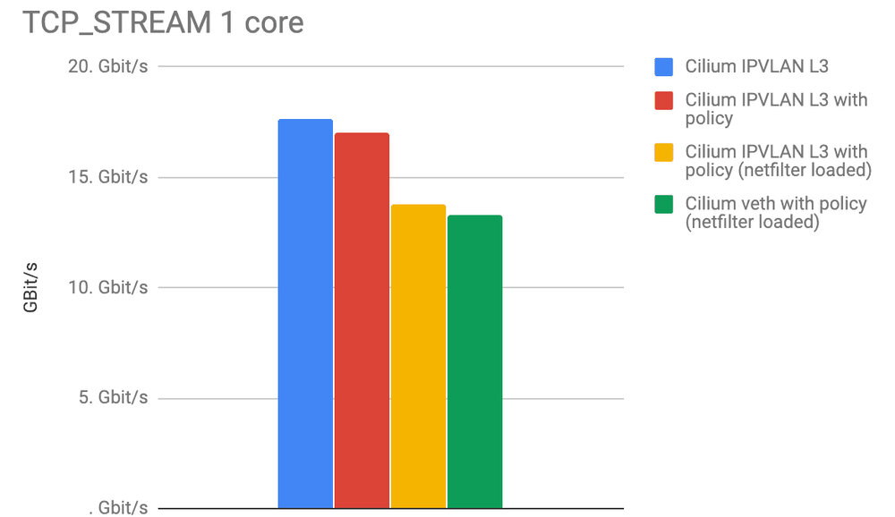
最后一张图说明了频谱的相反情况。 TCP_STREAM测试试图通过单个TCP连接抽取尽可能多的字节。 这是内存带宽可以发挥作用的地方，网络硬件或云供应商限制通常可以人为地限制基准。
- 抛开Sockmap的数据，我们可以看到IPVLAN模式比其他所有模式都有明显的优势。
- 我们预计Calico与Cilium的数字相似，所以我们可能会错误地配置一些东西。 任何帮助表示赞赏。 Calico在TCP_STREAM中表现更差并没有多大意义，因为此测试中的iptables开销在大量数据中分摊。
将Sockmap添加回图片证明了在套接字级别进行网络连接的性能优势。 同样，这种好处仅在本地进程之间获得，因为当sidecar代理生效时或者当服务被调度到同一节点上以便改进本地通信时，它经常发生。
用COS支持GKE
一个全新的 指南 记录了如何使用COS在GKE上运行Cilium。一个全新的 node-init DaemonSet 可以通过安装BPF文件系统并重新配置kubelet以在CNI模式下运行来准备GKE节点。 使用 cilium-etcd-operator 提供kvstore要求，同时保持安装简单。
1.4发布亮点
- 多集群
- 增加全球服务，通过注释实现跨多个Kubernetes服务的Kubernetes服务。 （测试版）
- 许多改进的安装指南，包括在使用 cilium-etcd-operator 时自动提取SSL证书的工具 。
- 透明加密（测试版）
- 使用带有PSK的IPsec将所有pod/host加密到pod/host通信。
- IPv4和IPv6
- PSK通过Kubernetes Secret配置
- 无需修改app或pod。
- IPVLAN支持（测试版）
- 利用IPVLAN的新的替代数据路径模式取代了veth对的使用，以改善延迟和性能。
- DNS请求/响应授权
- 现在，基于每个服务执行的实际DNS请求和响应，强制执行基于FQDN的安全策略。
- 能够指定服务可以执行的DNS请求的策略。
- 用于查询各个端点执行的FQDN主机名查找的API和CLI
- 能够在代理还原上恢复FQDN映射以进行持久映射
- 每个端点可配置的最小TTL和最大FQDN主机
- flannel整合（测试版）
- 能够在flannel上运行Cilium。 Flannel提供网络，Cilium提供负载平衡和策略实施。
- 能够挂钩现有的Flannel部署而无需重新启动任何pod。
- 基于AWS元数据的策略实施（alpha）
- 能够根据AWS元数据指定策略规则，例如EC2标签，安全组名称，VPC名称，子网名称等。
- 其他指标和监控
- 联网
- 通过kvstore实现新的简单PodCIDR路由传播模式。 通过 --auto-direct-node-routes`启用 。
- 现在，对于新安装，IPv6现在已禁用。 现有的ConfigMaps将继续当前行为。 启用通过
--enable-ipv6=true。 - 能够在不使用该
--enable-ipv4=false选项 分配任何IPv4地址的情况下运行仅IPv6集群 。 - 改进了负载均衡器的持久行为
- BPF sockmap支持加速本地进程通信。 可通过选项
--sockops-enable（alpha）获得 - 从IP地址识别的解耦端点，以支持任意IP寻址模型。
- 效率和规模
- 大大提高了CiliumEndpoint CRD的可扩展性。 不再需要为大型部署禁用CEP。
- 引入基于CIDR/DNS的规则的每节点本地标识，不需要集群或全局范围。 在节点23上执行DNS请求的pod导致该pod的白名单IP不再对集群中的其他节点产生任何影响。
- 现在，默认情况下禁用IPv6以减少小型部署中的内存占用。
- 现在，默认情况下禁用BPF映射预分配，以减少小型部署中的内存占用。
- 用于代理和客户端命令的单个二进制文件以减少容器图像大
- 将bugtool编译为静态二进制文件
- 新的cilium-operator提供单例任务，如CEP垃圾收集。
- CNI ADD上的同步pod标签检索。 这可以稍微降低pod调度速率，但避免在没有init策略的情况下启动pod的策略丢失。
- 状态探测器现在同时收集状态以提高准确性。
- 终止时更好的信号处理和新的terminationGracePeriodSeconds默认值为1秒，以最大限度地减少代理的停机时间
- Kubernetes
- 增加了对Kubernetes 1.13的支持
- 支持自动挂载BPF文件系统的新CRI-O版本
- 新的NodeInit DaemonSet为Cilium安装自动准备GKE节点。 这样可以使用COS和自动缩放。
- 当cilium不管理kube-dns时，cilium-operator现在会自动重启kube-dns。 这简化了托管Kubernetes产品的初始安装。
- Istio
- 改进了Istio集成
- 观测
- 新指标：kvstore操作，代理上游/处理延迟，转发和丢弃字节，节点事件，节点数，
- 文档
- 标准安装现在使用 cilium-etcd-operator ，不再依赖于提供外部kvstore的用户。
- 新的GKE指南，包括COS支持
- 使用eksctl的简化EKS指南
- 使用自动化工具改进了集群网格指南
升级说明
像往常一样，请按照升级指南 升级您的Cilium部署。 随意在 Slack 上ping我们 。
发布
- 发行说明和二进制文件： 1.4.0
- 容器image：
docker.io/cilium/cilium:v1.4.0